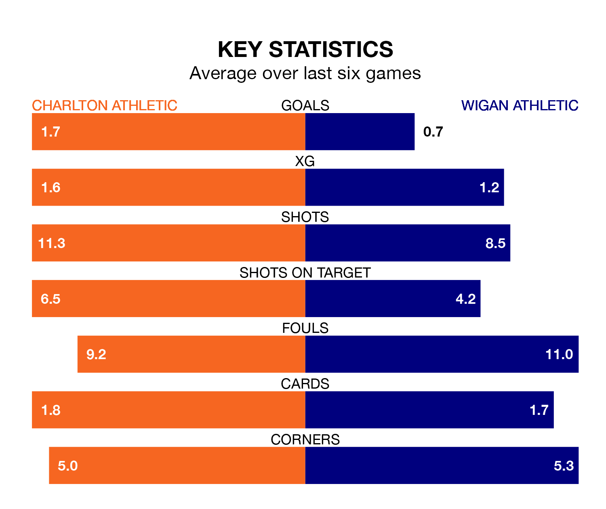

Charlton Athletic face Wigan Athletic on Tuesday seeking to protect their formidable unbeaten run in EFL League One.
The Addicks are unbeaten in 11, with four wins and seven draws, ahead of the 7.45pm kick-off.
They face a Wigan team who have won four and drawn three over the same number of games.
In Alfie May, Charlton have the league's most on-form striker so far this season. He has notched 23 goals in 39 appearances.
His goal rate of one every 142 minutes is quicker than that of Stephen Humphrys, Wigan's top scorer with a goal every 235 minutes, and a total of nine goals in 38 games.
In the last 10 years, Charlton and Wigan have played each other on 11 occasions. Charlton won five of them, Wigan four, and they drew twice.
On average, the Addicks scored 1.2 goals and the Latics 1.3 in those matches.
Their last meeting was on October 31, when Charlton won 3-2 away.
With 60 goals in 42 games so far this season, Charlton Athletic are scoring more than average in the league with 1.4 goals per game. But they are conceding more than average too, letting in 60 goals at a rate of 1.4 per game.
Wigan Athletic, meanwhile, are average scorers, with 1.3 goals per game. They have conceded 1.2 goals per game.
The Addicks are 17th in the table after 42 games, of which they have won 11 and drawn 17, earning 50 points.
The Latics are six places ahead of the hosts in 11th, with 17 wins and nine draws putting them on 60 points.
Charlton's last match was on Saturday, a 2-1 win against Barnsley, with May getting the goals for the Addicks.
Wigan drew 0-0 with Port Vale last time out, also on Saturday.
Tuesday's match will be refereed by Lee Swabey, who has taken charge of 11 EFL League One games so far this season, issuing two red cards and booking 60 players. He has awarded two penalties.
The last Charlton game Swabey refereed was a 1-1 home draw with Burton Albion on December 23. His last Wigan match was their 1-0 win away at Shrewsbury Town on February 17.
Updated: 14:47 (UTC), 09/04/24